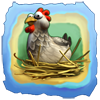

Получено: файл; исходный URL. В статье подписано как фото Птичьего двора. Состояние при съёмке и исходная расстановка не подтверждены; табло и отдельные детали могли измениться в ходе игры. Совпадение файлов разных хостов не проверено. Исходный файл без перекодирования, автор и дата снимка неизвестны. Страница: источник.
Птичий двор
браузерная социальная версия; сеть не уточнена- Тип
- Острова
- Версия и дата
- браузерная социальная версия; сеть не уточнена
Дополнительные изображения

Данные по источнику · браузерная социальная версия; сеть не уточнена · 10.07.2016 — дата публикации копии
Предварительно: Исторический источник; актуальность и переносимость на другие версии не установлены.. Требуется сверка.
- Доступ
- Избу для перехода можно было купить на рынке; локация доступна 10 дней. От какой именно точки отсчитывается срок, не указано.
- Событие
- Расчистка палочками-выручалочками, поиск пасхальных яиц и шесть рецептов окрашивания белых яиц. Открытие окрашенных яиц — после 1 мая; год в тексте не назван.
- Примечание
- Фанатская копия датирована 10.07.2016, что позднее упомянутого 1 мая; дата исходного обновления неизвестна.
Данные по источнику · социальная браузерная версия; сеть не указана · 10.07.2016 — дата копии, не обязательно дата события
Предварительно: Фанатская новость; возможно копирование; независимость и актуальность не установлены.. Требуется сверка.
- Доступ и расчистка
- Историческая временная локация доступна 10 дней; ведущую на неё Избу можно было купить на рынке. Для расчистки нужны палочки-выручалочки. Начало отсчёта 10 дней не уточнено.
- Пасхальные яйца
- Шесть новых рецептов окраски белых яиц; чем чище локация, тем больше яиц. В каждом яйце — пасхальный сюрприз; окрашенные яйца можно было открыть после 1 мая. Состав рецептов и содержимое подарков не указаны.
- Ресурсы
- Небольшой шанс найти железные семечки из болотной травы.
- Датировка
- Страница скопирована 10 июля 2016 года, хотя сообщает о возможности открыть яйца после 1 мая. Дата события по дате копии не устанавливается.
Данные по источнику · браузерная «Зомби Ферма» / «Зомби Мания»; платформа не уточнена · снимок каталога 10.12.2019; дата редакции неизвестна
Предварительно: Фанатский каталог; возможны общие картинки для разных локаций и зависимость от других источников.. Требуется сверка.
- Каталог
- В разделе «Новые Острова в игре» указана локация «Птичий двор».
- Оговорка
- Каталог показывает название, картинку и ссылку; отдельная статья по этой ссылке не прочитана в рамках этого импорта. Условия доступа и версии требуют проверки.
- Сравнение снимков
- Эта же подпись, раздел и адрес картинки присутствуют в снимке того же каталога 14.09.2018; это не независимое подтверждение.
Данные по источнику · историческая браузерная Зомби Ферма / Зомби Мания · Дата URL статьи; дата последней редакции неизвестна
Предварительно: Фанатская статья; исторические условия требуют проверки по версии и дате.. Требуется сверка.
- Маршрут и условия
- С Домашнего через Курятник: 50 000 монет, 100 ржи, 3 факела. На острове есть гнёзда и Ряба, дающая яйцо каждые 30 минут; декорации нельзя забрать. Ссылка на Экспресс-прополку датирована 4 мая: статья дополнена позднее даты в адресе.


Данные по источнику · браузерная социальная версия; сеть не уточнена · 27.04.2016
Предварительно: Проверено название и выборочно миниатюры кадров, не полный просмотр. Видеозапись может показывать изменённую карту; исходные координаты не установлены.. Требуется сверка.
- Видео
- Предпросмотр видео показывает переход и фрагменты территории с растительностью и постройками. Состояние до первого посещения не установлено.
Связанные сущности
нет проверенных связей — требуется сверка.